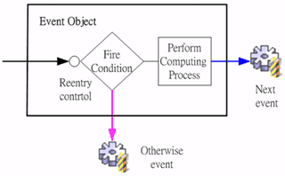

|
事件執行狀態與訊息 (event runtime status and message)

事件物件
(event object) 是由啟動條件 (fire condition)、否則事件 (otherwise
event)、執行運算程序 (perform computing process) 及後續事件 (next
event)所組成。啟動條件 (fire condition) 是一個運算式 (formula)，當結果值為真 (非 0 且非空字串)，則執行運算程序
(perform computing process)，之後接續執行後續事件 (next event)
；運算式 (formula) 結果值為偽，則執行否則事件 (otherwise event)。設計師可以啟動條件
(fire condition) 根據應用程式流程需求，連結否則事件 (otherwise
event) 及後續事件 (next event) ，達成具有流程分支 (branch)、控管
(control) 的事件流程 (event flow)。 運算程序 (computing process) ，分為四大類 (元件、資料來源、模組、進階)，在應用程式執行期 (runtime)，執行、控制：
運用這些事件的運算程序，串連
(link)以啟動條件分支執行的否則事件及後續事件，設計師可以完整的將程式流程，以完全視覺化的事件流程綱要
(event flow schema) 予以展現，不論在流程分析 (analysis)、更動(alter)、維護
(maintain) 與除錯 (debug)，皆能快速且正確的因應。 事件流程 (event flow) 是由使用者或系統程序 (system flow) 所啟動，在元件及資料來源設計時，設計師根據使用者操作的行為性，分別連結 (link) 啟動的事件流程 (event flow)，完成回應 (respond) 使用者操作的作業需求；系統程序所啟動的事件，例如：視窗開啟程序中，會依序啟動資料來源開啟前事件 (before data source open event)及資料來源開啟後事件(after data source open event)，視窗關閉前，會啟動關閉事件(final event)。設計師只要在系統程序中連結所需的作業事件即可。
事件列表 (event table) 位於視窗設計平台 (form design framework) 的右下角，列示設計師所建立的所有事件，設計師可以刪除 (delete) 或編輯 (update) 事件屬性設定 (properties)，也可以標示 (mark) 事件後，以滑鼠拖曳至工作視窗，系統會新增一個按鈕元件 (button component)，並將其動作事件 (action event) 設定為所標示之事件。按下新增事件 (create new event) 的按鈕後，系統將會開啟事件流程綱要 (event flow schema) 的作業環境 (framework)，設計師可以在 事件流程綱要 (event flow schema) 中，規劃、新增、編輯、除錯事件流程 (event flow)。
在執行狀態時，系統會啟動設計師所預設的事件，例如：視窗開啟事件；或由使用者啟動事件，例如：使用者按下按鈕元件。事件是否被啟動、啟動後是否執行、或在啟動條件判斷後執行否則事件，以及事件執行時是否成功，設計師可以透過運算式 EvStatus("事件名稱") 取得最後一次事件執行的狀態。
EvStatus("事件名稱") ：取得事件執行狀態。
EvStatus("事件名稱.error") ：取得事件執行錯誤代碼。
EvStatus("事件名稱.INFO_STRING") ：取得事件執行 INFO_STRING 的訊息。
事件執行後，設計師可以使用 EvStatus("事件名稱.error") 取得錯誤代碼，各代碼所代表的訊息，請參閱各事件說明。使用 EvStatus("事件名稱.INFO_STRING") 取得執行結果資訊，其中 INFO_STRING 請參閱各事件說明。
Copyright © 2001~ 2004 Probe Technology . All Rights Reserved. Questions, comments, and suggestions to Service@probe.com.tw |